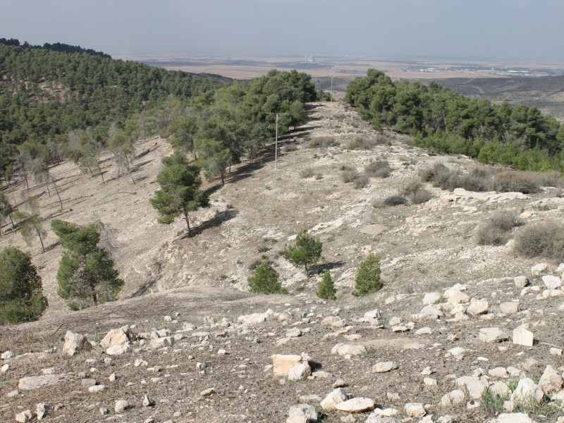
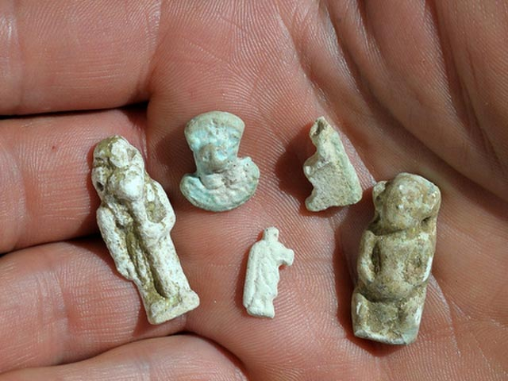
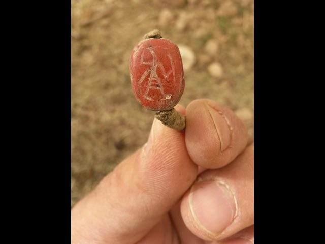
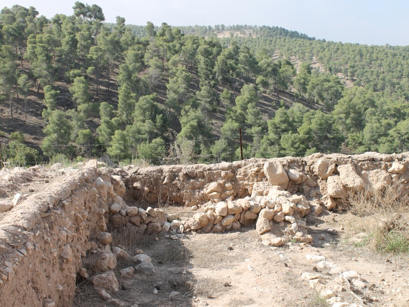
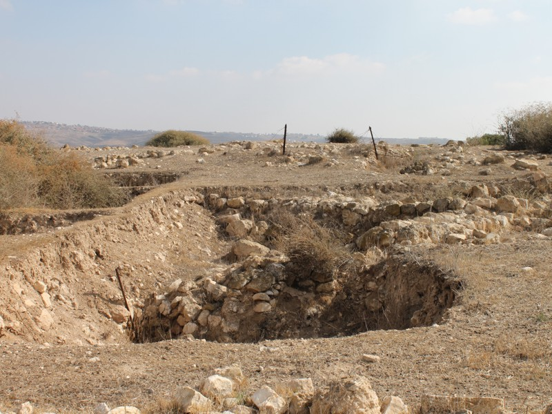
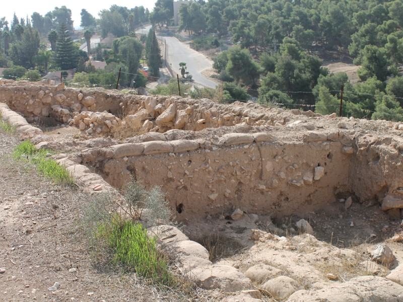

Did the Jews Take Egypt with Them in the Exodus?
Attempts to link the finds with the Exodus are not beyond dispute, since it has not yet been possible to establish exactly the chronology of this most important event in Jewish history. According to various versions, the dating of the biblical Exodus ranges between the 15th and the 12th centuries BC.

Taking the Jews out of Egypt proved easier than taking Egypt out of the Jews
Source: newsru.co.il. Translated from Russian.

Staff of the Unit for the Prevention of Antiquities Robbery discovered, near the mound of Tel Halif, next to Kibbutz Lahav, 20 kilometres north of Beersheba, a cave that had fallen prey to illegal diggers. The robbers had been especially interested in the occupation layer dating from the end of the second millennium BC; the other layers they had destroyed. The archaeologists decided to begin excavations to save the historical heritage from plunder. In the course of the work it emerged that about 3,400 years ago an Egyptian administrative building had stood on this spot. They also found other evidence of an Egyptian presence in the Land of Israel in the Late Bronze Age. The specialists found about 300 pottery artefacts dating from the Late Bronze Age (the second millennium BC) and the early Iron Age (the end of the second millennium to the middle of the first millennium BC). In most cases these are fragments, but some objects have survived whole. The cave also yielded objects of everyday use, cult objects and jewellery made of bronze, faience and shells, cosmetic articles, and signet rings of Egyptian type. It is supposed that they were collected here over several decades.

"Most of the finds are typical of the Jewish culture of the southern part of Israel. But there are dozens of stone rings made in the form of a scarab beetle and decorated with ornament characteristic of Egypt. And in the Late Bronze Age the Egyptians ruled here," says Amir Ganor, head of the anti-robbery unit.

Most of the rings with scarab seals date from the 14th–15th centuries BC. The inscriptions on them show that they belong to the reigns of the pharaohs Thutmose III, who ruled in 1504–1450, and Amenhotep III (1386–1349). Another ring is carved with the god Ptah, especially revered in Memphis. Bronze figurines of gods and amulets characteristic of Egyptian culture were also found. The scholars connect this with the fact that even after the exodus from Egypt the Jews remained under Egyptian cultural influence. "Taking the Jews out of Egypt proved easier than taking Egypt out of the Jews," Ganor remarks.

"In the Late Bronze Age Egypt was a mighty empire, and its supremacy was recognised by the neighbouring countries. The dominion of the land of the pharaohs was sometimes military and political, and sometimes only cultural. Egyptian traditions also influenced the culture of the Jewish inhabitants of Canaan," he continues.

We note that attempts to link the finds with the Exodus are not beyond dispute, since it has not yet been possible to establish exactly the chronology of this most important event in Jewish history. According to various versions, the dating of the biblical Exodus ranges between the 15th and the 12th centuries BC.

 Hearing the Voice of the Shofar: the Film "Shofar Experience"
Hearing the Voice of the Shofar: the Film "Shofar Experience" Haifa Celebrates Purim 2015
Haifa Celebrates Purim 2015 Contemporary Artists Interpret the Passover Haggadah
Contemporary Artists Interpret the Passover Haggadah